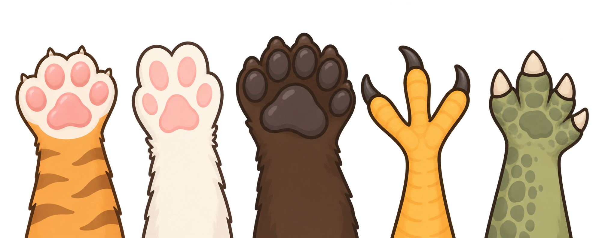

Why FurFind Was Created
Losing a beloved pet can be stressful and heartbreaking. FurFind was created to make the search process easier, faster, and organized by giving pet owners a dedicated platform to share information and reach a wider community.
FurFind is a web-based platform designed to help reunite lost pets with their owners. Pet owners can quickly create lost pet reports by providing essential details such as the pet's type, breed, last known location, photo, and contact information.

Losing a beloved pet can be stressful and heartbreaking. FurFind was created to make the search process easier, faster, and organized by giving pet owners a dedicated platform to share information and reach a wider community.
FurFind connects pet owners with animal shelters, rescue groups, veterinary clinics, and community members. By viewing lost pet reports, these groups can help identify missing pets and contact owners when a match is found.
Our mission is to create a reliable community that increases the chances of finding lost pets safely and quickly. FurFind believes that every pet deserves the opportunity to return home.